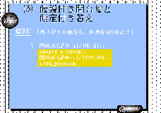

<html>
<head>
<title> Slide No.14 </title>
</head>

<frameset rows="430,130">

<noframes>
<body>
<a href="GIF/slide14.GIF"></a>

<a href="AU/voice14.au">
	</a>[279K]<p>
<!--		-->
<b> Quixote </b> では、
<a href=""> 「角２が８０度なら、四角形ａの形は？」 </a> という
質問を出すこともできます。<p>

「角２が８０度なら」は、仮説です。つまり、<b> Quixote </b> では
このような仮説付き問い合わせを処理できます。<p>

"?-" で始まるものが <b> Quixote </b> で記述された問合せです。
そのうち、四角で囲まれた部分が仮説を表しています。<p>

この仕組みは、データベースを作った後に「角２が８０度」が分かった時、
四角形ａの形を知りたい場合にも使えます。<p>
<!--		-->

<hr>
<a href="slide15.html" target="_top">次の OHP へ</a>
<br><br>
<a href="slide13.html" target="_top">前の OHP へ</a>
<br><br>
<a href="HomePage.html" target="_top">OHP の一覧へ</a>
</body>
</noframes>

<frame src="onlyslide14.html">
<frame src="buttonexpla14.html">

</frameset>

</html>
